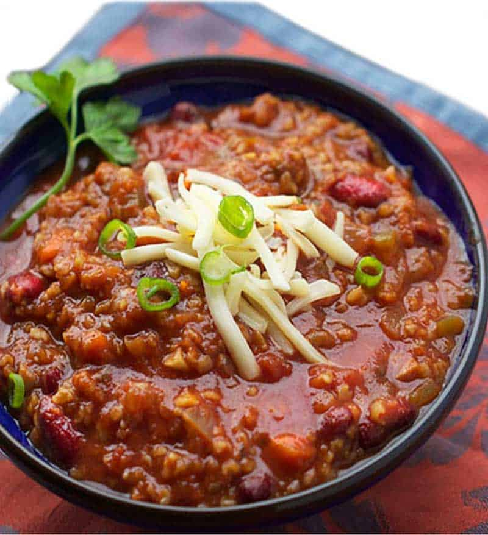

Vegetarian Chili

Description
10 servings
A home chef's vegetarian take on Bobby Flay's Red Beef Chili. This spicy chili contains no animal products.
Ingredients
- 2tbs. olive oil
- 2tbs. ground cumin
- 12oz. dark beer
- 1 onion
- 4 cloves of garlic
- 2 Poblanos
- 2 Anaheims
- 2 Jalapenos
- 2 Cubanos
- 2 Banana peppers
- 2-4 other peppers for variety
- 1 chipotle in Adobe sauce
- 2tbs. medium chili powder
- 4tbs. hot chili powder
- 7 tomatillos
- 16oz. diced tomtoes
- 3 15oz. cans of black beans
- 2 15oz. cans of red kidney beans
- 4-5 cups of water
- 2tbs. unsweetened chocolate, finely chopped
Directions
- Roughly chop onion, peppers, garlic and tomatillos.
- Heat 2 tablespoons of olive oil on medium heat in a large pot.
- When oil is heated, add onions, peppers, and garlic. Stir every 15 minutes. Cook until soft for 45-60 minutes.
- Add chili powder, cumin, and tomatillos. Stir constantly for about 1-2 minutes.
- Add beer and Chipotle pepper in adobe sauce. Cook for about 20 mintes.
- Add tomatoes and water. Cook for 30 minutes.
- Puree the mixture to desired consistancy.
- Add beans and cook for 60 minutes.
- Mix in unsweetened chocolate and cook 5 more minutes.